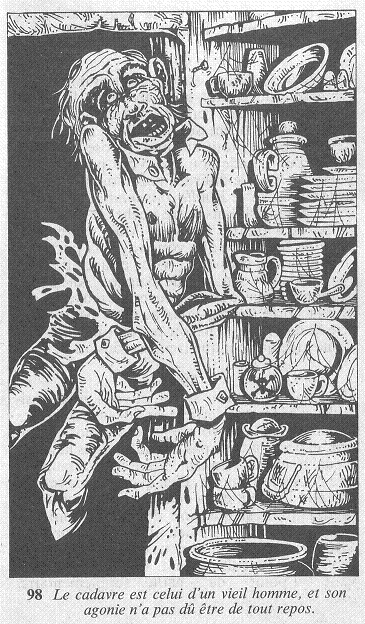

Vous poussez la porte avec précaution tout d'abord, mais, comme il règne dans la pièce l'obscurité la plus totale, vous l'ouvrez en grand. Aaaïïeeee ! Vous poussez un hurlement de terreur, car un corps vient de dégringoler sur votre tête ! Le cadavre est celui d'un vieil homme et, à en juger par l'expression figée de son visage, son agonie n'a pas dû être de tout repos.

Ajoutez 3 points à votre total de PEUR pour cette macabre rencontre et, si vous êtes toujours vivant, la panique vous fait bondir hors de cette pièce.